Differential expression
Last updated: 2025-04-30
Checks: 7 0
Knit directory: prs/
This reproducible R Markdown analysis was created with workflowr (version 1.7.1). The Checks tab describes the reproducibility checks that were applied when the results were created. The Past versions tab lists the development history.
Great! Since the R Markdown file has been committed to the Git repository, you know the exact version of the code that produced these results.
Great job! The global environment was empty. Objects defined in the global environment can affect the analysis in your R Markdown file in unknown ways. For reproduciblity it’s best to always run the code in an empty environment.
The command set.seed(20250417) was run prior to running
the code in the R Markdown file. Setting a seed ensures that any results
that rely on randomness, e.g. subsampling or permutations, are
reproducible.
Great job! Recording the operating system, R version, and package versions is critical for reproducibility.
Nice! There were no cached chunks for this analysis, so you can be confident that you successfully produced the results during this run.
Great job! Using relative paths to the files within your workflowr project makes it easier to run your code on other machines.
Great! You are using Git for version control. Tracking code development and connecting the code version to the results is critical for reproducibility.
The results in this page were generated with repository version 6a1157a. See the Past versions tab to see a history of the changes made to the R Markdown and HTML files.
Note that you need to be careful to ensure that all relevant files for
the analysis have been committed to Git prior to generating the results
(you can use wflow_publish or
wflow_git_commit). workflowr only checks the R Markdown
file, but you know if there are other scripts or data files that it
depends on. Below is the status of the Git repository when the results
were generated:
Ignored files:
Ignored: .DS_Store
Ignored: .Rhistory
Ignored: .Rproj.user/
Ignored: analysis/.DS_Store
Ignored: data/.DS_Store
Untracked files:
Untracked: analysis/dds.rda
Untracked: analysis/differential_expression_Celiac_GCST90014442_results.csv
Untracked: analysis/differential_expression_Celiac_GCST90468120_results.csv
Untracked: analysis/differential_expression_IBD_GCST90013901_results.csv
Untracked: analysis/differential_expression_IBD_GCST90013951_results.csv
Untracked: analysis/differential_expression_LUPUS_GCST003156_results.csv
Untracked: analysis/differential_expression_LUPUS_GCST011096_results.csv
Untracked: analysis/differential_expression_PGS000163_results.csv
Untracked: analysis/differential_expression_PGS000164_results.csv
Untracked: analysis/differential_expression_PGS000165_results.csv
Untracked: analysis/differential_expression_PGS000166_results.csv
Untracked: analysis/differential_expression_PGS000167_results.csv
Untracked: analysis/differential_expression_PGS000168_results.csv
Untracked: analysis/differential_expression_PGS000169_results.csv
Untracked: analysis/differential_expression_PGS000170_results.csv
Untracked: analysis/differential_expression_PGS000171_results.csv
Untracked: analysis/differential_expression_PGS000172_results.csv
Untracked: analysis/differential_expression_PGS000173_results.csv
Untracked: analysis/differential_expression_PGS000174_results.csv
Untracked: analysis/differential_expression_PGS000175_results.csv
Untracked: analysis/differential_expression_PGS000176_results.csv
Untracked: analysis/differential_expression_PGS000177_results.csv
Untracked: analysis/differential_expression_PGS000178_results.csv
Untracked: analysis/differential_expression_PGS000179_results.csv
Untracked: analysis/differential_expression_PGS000180_results.csv
Untracked: analysis/differential_expression_PGS000181_results.csv
Untracked: analysis/differential_expression_PGS000182_results.csv
Untracked: analysis/differential_expression_PGS000183_results.csv
Untracked: analysis/differential_expression_PGS000184_results.csv
Untracked: analysis/differential_expression_PGS000185_results.csv
Untracked: analysis/differential_expression_PGS000186_results.csv
Untracked: analysis/differential_expression_PGS000187_results.csv
Untracked: analysis/differential_expression_PGS000188_results.csv
Untracked: analysis/differential_expression_PGS000189_results.csv
Untracked: analysis/differential_expression_PGS000190_results.csv
Untracked: analysis/differential_expression_PGS000191_results.csv
Untracked: analysis/differential_expression_T1D_GCST90000529_results.csv
Untracked: analysis/differential_expression_T1D_GCST90014023_results.csv
Untracked: analysis/metadata.txt
Untracked: analysis/normalized_counts.rda
Untracked: analysis/vst norm counts.rda
Untracked: data/GTEx_v8.bk
Untracked: data/GTEx_v8.rds
Untracked: data/Whole_Blood.v8.covariates.txt
Untracked: data/blood_cell/
Untracked: data/gene_reads_2017-06-05_v8_whole_blood.gct
Untracked: data/gene_tpm_2017-06-05_v8_whole_blood.gct.gz
Untracked: data/immune/
Unstaged changes:
Deleted: analysis/QC.Rmd
Deleted: analysis/normalized_counts.txt
Modified: prs.Rproj
Note that any generated files, e.g. HTML, png, CSS, etc., are not included in this status report because it is ok for generated content to have uncommitted changes.
These are the previous versions of the repository in which changes were
made to the R Markdown
(analysis/differential_expression.Rmd) and HTML
(docs/differential_expression.html) files. If you’ve
configured a remote Git repository (see ?wflow_git_remote),
click on the hyperlinks in the table below to view the files as they
were in that past version.
| File | Version | Author | Date | Message |
|---|---|---|---|---|
| Rmd | 6a1157a | ElisaChen | 2025-04-30 | workflowr::wflow_publish("analysis/differential_expression.Rmd") |
| html | 959e031 | ElisaChen | 2025-04-30 | Build site. |
| Rmd | 9017040 | ElisaChen | 2025-04-30 | workflowr::wflow_publish("analysis/differential_expression.Rmd") |
| html | ae6b2a5 | ElisaChen | 2025-04-30 | Build site. |
| Rmd | 6488595 | ElisaChen | 2025-04-30 | workflowr::wflow_publish("analysis/differential_expression.Rmd") |
| html | c4ece77 | ElisaChen | 2025-04-30 | Build site. |
| Rmd | 5b80e27 | ElisaChen | 2025-04-30 | workflowr::wflow_publish(c("analysis/differential_expression.Rmd", |
Correlation between PRS & PCs
# load prs & pcs
metadata_file <- "analysis/metadata.txt"
metadata <- read.csv(metadata_file, header = T, sep = "\t", stringsAsFactors = T)
metadata$sex <- as.factor(metadata$sex)
traits <- metadata[, 7:43]
pc <- metadata[, 1:5]
# Calculate the correlation between each trait and each PC
correlation_matrix <- cor(traits, pc)
range(correlation_matrix)[1] -0.2850667 0.2787222correlation_matrix <- t(correlation_matrix)
# Create the heatmap using corrplot
corrplot(correlation_matrix, method = "color",
col = colorRampPalette(c("blue", "white", "red"))(200), # color palette
addCoef.col = "black", # Add correlation coefficients to the plot
number.cex = 0.4, # Adjust the font size of the numbers
tl.col = "black", # text label color
tl.srt = 90, # rotate text labels
tl.cex = 0.5,
title = "Correlation between Traits and PCs",
mar = c(0, 0, 1, 0)
)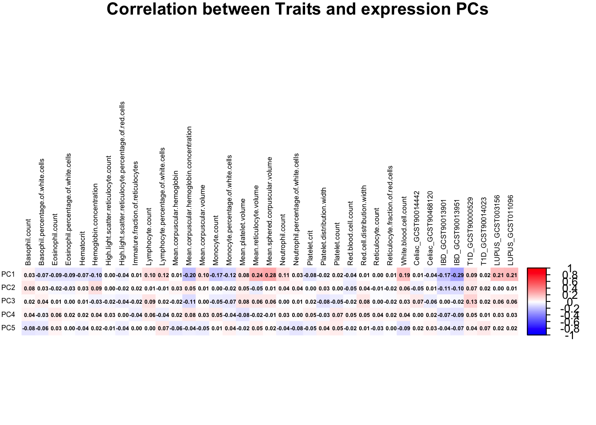
| Version | Author | Date |
|---|---|---|
| c4ece77 | ElisaChen | 2025-04-30 |
Perform DESeq2 differential expression analysis for each trait
# Load the gene expression data
gene_expr_file <- "data/gene_reads_2017-06-05_v8_whole_blood.gct"
raw_count_df <- fread(gene_expr_file, header = TRUE, sep = "\t", drop = "id")
id <- raw_count_df$Name
raw_count <- raw_count_df[, -c(1:2)]
# modify GTEx sample names matching names used in PRS data
colnames(raw_count) <- sub("^(GTEX-[^-.]+).*", "\\1", colnames(raw_count))
matching_samples <- intersect(rownames(metadata), colnames(raw_count))
final_count <- raw_count[ , ..matching_samples]
# prefilter: keep only rows that have a count of at least 10 for a minimal number of samples
keep_genes <- rowSums(final_count >= 10) >= 100
final_count <- final_count[keep_genes, ]
id <- id[keep_genes]
# Loop through each trait and run DESeq2
for (trait in colnames(traits)) {
# Create the DESeqDataSet for the current trait
dds <- DESeqDataSetFromMatrix(
countData = as.matrix(final_count), # Raw counts
colData = metadata[, c(1:6, which(colnames(metadata) == trait))],
design = as.formula(paste("~ PC1 + PC2 + PC3 + PC4 + PC5 + sex +", trait))
)
rownames(dds) <- id
# Run DESeq2 analysis
dds <- DESeq(dds, parallel = TRUE, BPPARAM = MulticoreParam(4))
# Get the results for the current trait
res <- results(dds)
# Save the results to a file
write.csv(res, paste0("differential_expression_", trait, "_results.csv"))
# print a summary of the results
print(paste("Results for trait:", trait))
print(summary(res))
# plot the MA-plot for the current trait
png(paste0("ma_plot_", trait, ".png"), width = 800, height = 600)
plotMA(res, main = paste("MA Plot for", trait))
dev.off()
# volcano plot
res_tableOE <- as.data.frame(res)
res_tableOE$gene_name <- raw_count_df$Description[match(rownames(res_tableOE), id)]
res_tableOE <- mutate(res_tableOE, threshold_OE = padj < 0.05 &
abs(log2FoldChange) >= 1)
res_tableOE <- res_tableOE %>% arrange(padj) %>% mutate(genelabels = "")
res_tableOE$genelabels[1:10] <- res_tableOE$gene_name[1:10]
volcano_plot <- ggplot(res_tableOE, aes(x = log2FoldChange, y = -log10(padj))) +
geom_point(aes(colour = threshold_OE)) +
geom_text_repel(aes(label = genelabels)) +
ggtitle(paste("Volcano Plot for", trait)) +
xlab("log2 fold change") +
ylab("-log10 adjusted p-value") +
theme(legend.position = "none",
plot.title = element_text(size = rel(1.5), hjust = 0.5),
axis.title = element_text(size = rel(1.25)))
# Save the volcano plot
png(paste0("volcano_plot_", trait, ".png"), width = 800, height = 600)
print(volcano_plot)
dev.off()
}for (trait in colnames(traits)) {
res <- read.csv(paste0("analysis/differential_expression_", trait, "_results.csv"), row.names = 1, header = T)
print(paste0(trait, ": number of significant differential genes is ", sum(res$padj < 0.05, na.rm=TRUE)))
}[1] "PGS000163: number of significant differential genes is 226"
[1] "PGS000164: number of significant differential genes is 104"
[1] "PGS000165: number of significant differential genes is 252"
[1] "PGS000166: number of significant differential genes is 133"
[1] "PGS000167: number of significant differential genes is 152"
[1] "PGS000168: number of significant differential genes is 57"
[1] "PGS000169: number of significant differential genes is 196"
[1] "PGS000170: number of significant differential genes is 272"
[1] "PGS000171: number of significant differential genes is 201"
[1] "PGS000172: number of significant differential genes is 344"
[1] "PGS000173: number of significant differential genes is 458"
[1] "PGS000174: number of significant differential genes is 228"
[1] "PGS000175: number of significant differential genes is 369"
[1] "PGS000176: number of significant differential genes is 128"
[1] "PGS000177: number of significant differential genes is 205"
[1] "PGS000178: number of significant differential genes is 100"
[1] "PGS000179: number of significant differential genes is 115"
[1] "PGS000180: number of significant differential genes is 206"
[1] "PGS000181: number of significant differential genes is 211"
[1] "PGS000182: number of significant differential genes is 707"
[1] "PGS000183: number of significant differential genes is 168"
[1] "PGS000184: number of significant differential genes is 69"
[1] "PGS000185: number of significant differential genes is 90"
[1] "PGS000186: number of significant differential genes is 53"
[1] "PGS000187: number of significant differential genes is 112"
[1] "PGS000188: number of significant differential genes is 444"
[1] "PGS000189: number of significant differential genes is 69"
[1] "PGS000190: number of significant differential genes is 141"
[1] "PGS000191: number of significant differential genes is 719"
[1] "Celiac_GCST90014442: number of significant differential genes is 75"
[1] "Celiac_GCST90468120: number of significant differential genes is 245"
[1] "IBD_GCST90013901: number of significant differential genes is 256"
[1] "IBD_GCST90013951: number of significant differential genes is 185"
[1] "T1D_GCST90000529: number of significant differential genes is 298"
[1] "T1D_GCST90014023: number of significant differential genes is 61"
[1] "LUPUS_GCST003156: number of significant differential genes is 74"
[1] "LUPUS_GCST011096: number of significant differential genes is 79"


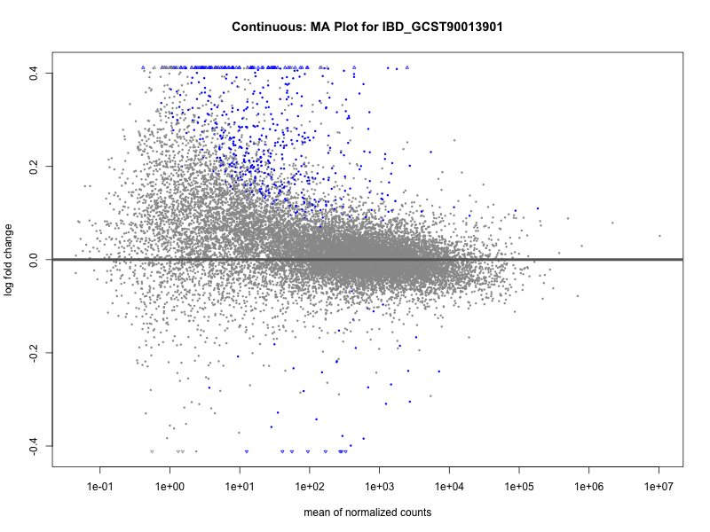 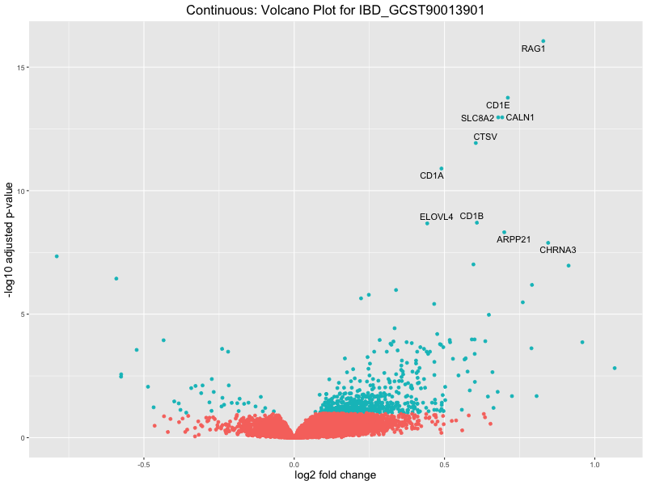
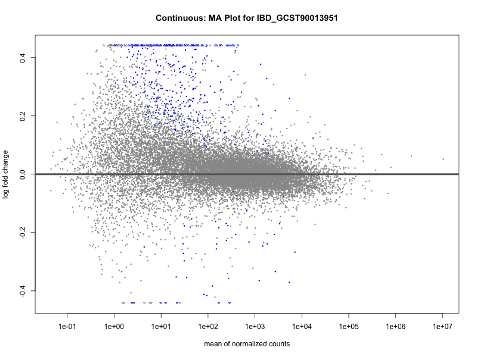 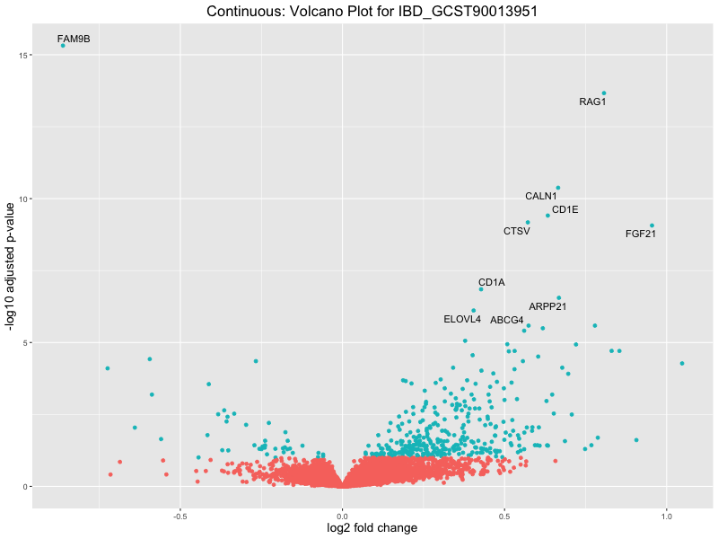
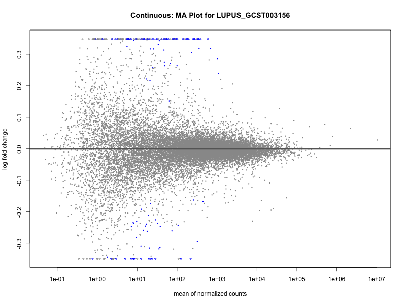 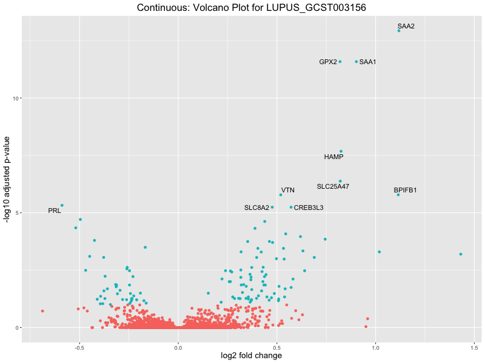
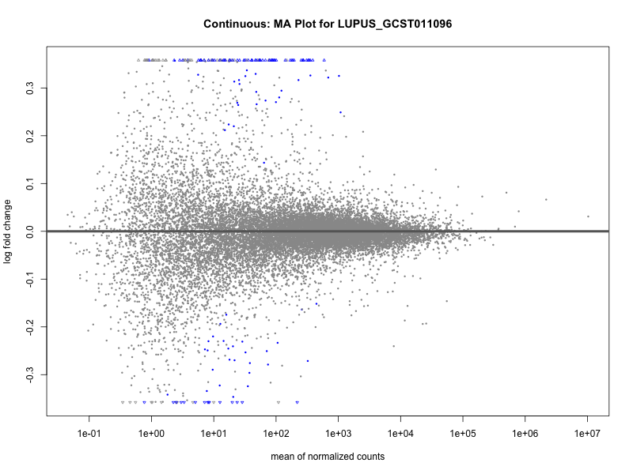 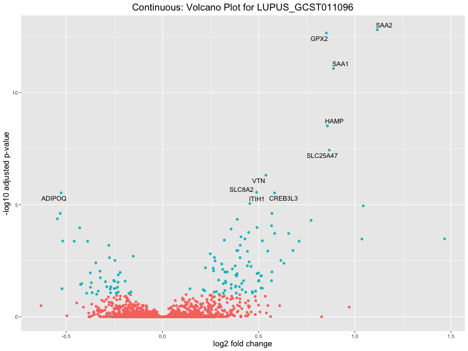
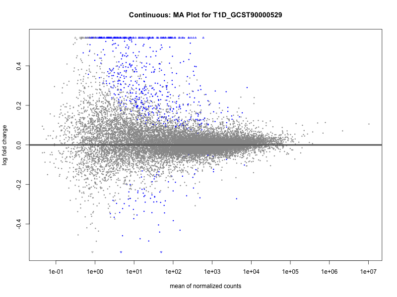
 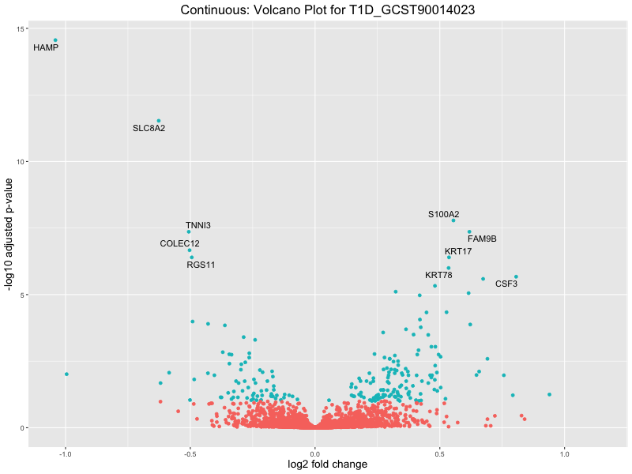
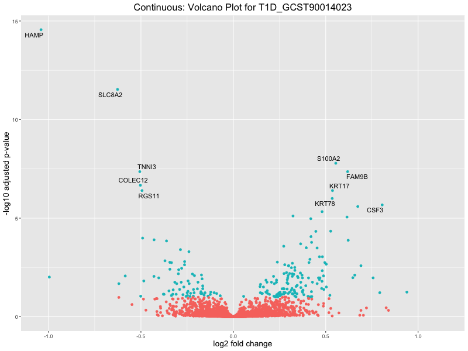
sessionInfo()R version 4.2.2 (2022-10-31)
Platform: x86_64-apple-darwin17.0 (64-bit)
Running under: macOS Big Sur ... 10.16
Matrix products: default
BLAS: /Library/Frameworks/R.framework/Versions/4.2/Resources/lib/libRblas.0.dylib
LAPACK: /Library/Frameworks/R.framework/Versions/4.2/Resources/lib/libRlapack.dylib
locale:
[1] en_US.UTF-8/en_US.UTF-8/en_US.UTF-8/C/en_US.UTF-8/en_US.UTF-8
attached base packages:
[1] stats4 stats graphics grDevices utils datasets methods
[8] base
other attached packages:
[1] ggrepel_0.9.6 BiocParallel_1.32.6
[3] DESeq2_1.38.3 SummarizedExperiment_1.28.0
[5] Biobase_2.58.0 MatrixGenerics_1.10.0
[7] matrixStats_1.2.0 GenomicRanges_1.50.2
[9] GenomeInfoDb_1.34.9 IRanges_2.32.0
[11] S4Vectors_0.36.2 BiocGenerics_0.44.0
[13] corrplot_0.95 ggplot2_3.5.1
[15] dplyr_1.1.4 data.table_1.16.4
[17] workflowr_1.7.1
loaded via a namespace (and not attached):
[1] httr_1.4.7 sass_0.4.9 bit64_4.6.0-1
[4] jsonlite_1.8.9 bslib_0.9.0 getPass_0.2-4
[7] blob_1.2.4 GenomeInfoDbData_1.2.9 yaml_2.3.10
[10] pillar_1.10.1 RSQLite_2.3.9 lattice_0.22-6
[13] glue_1.8.0 digest_0.6.37 RColorBrewer_1.1-3
[16] promises_1.3.2 XVector_0.38.0 colorspace_2.1-1
[19] htmltools_0.5.8.1 httpuv_1.6.15 Matrix_1.5-1
[22] XML_3.99-0.18 pkgconfig_2.0.3 zlibbioc_1.44.0
[25] xtable_1.8-4 scales_1.3.0 processx_3.8.5
[28] whisker_0.4.1 later_1.4.1 git2r_0.33.0
[31] tibble_3.2.1 annotate_1.76.0 KEGGREST_1.38.0
[34] generics_0.1.3 cachem_1.1.0 withr_3.0.2
[37] cli_3.6.3 crayon_1.5.3 magrittr_2.0.3
[40] memoise_2.0.1 evaluate_1.0.3 ps_1.8.1
[43] fs_1.6.5 tools_4.2.2 lifecycle_1.0.4
[46] stringr_1.5.1 locfit_1.5-9.8 munsell_0.5.1
[49] DelayedArray_0.24.0 Biostrings_2.66.0 AnnotationDbi_1.60.2
[52] callr_3.7.6 compiler_4.2.2 jquerylib_0.1.4
[55] rlang_1.1.5 grid_4.2.2 RCurl_1.98-1.16
[58] rstudioapi_0.17.1 bitops_1.0-9 rmarkdown_2.29
[61] gtable_0.3.6 codetools_0.2-20 DBI_1.2.3
[64] R6_2.5.1 knitr_1.49 fastmap_1.2.0
[67] bit_4.5.0.1 rprojroot_2.0.4 stringi_1.8.4
[70] parallel_4.2.2 Rcpp_1.0.14 png_0.1-8
[73] vctrs_0.6.5 geneplotter_1.76.0 tidyselect_1.2.1
[76] xfun_0.50